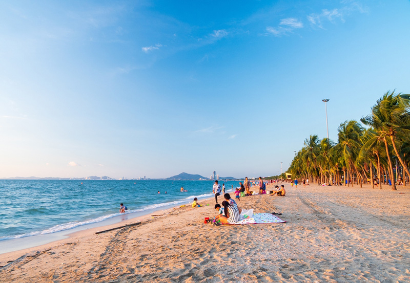
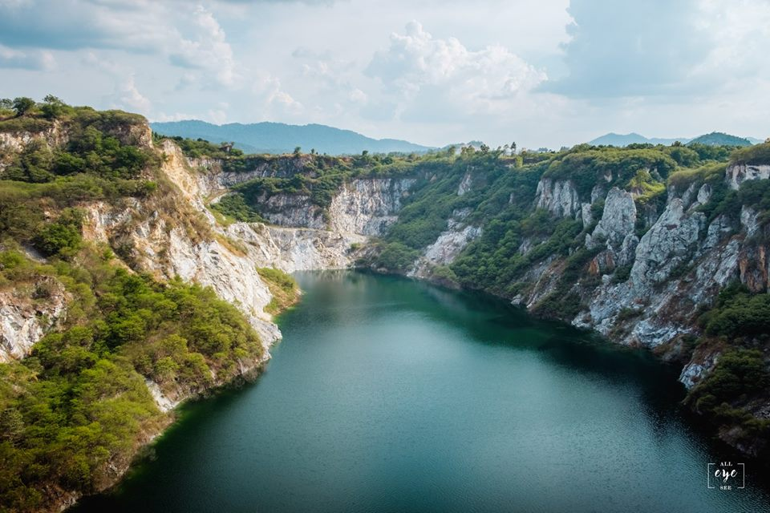
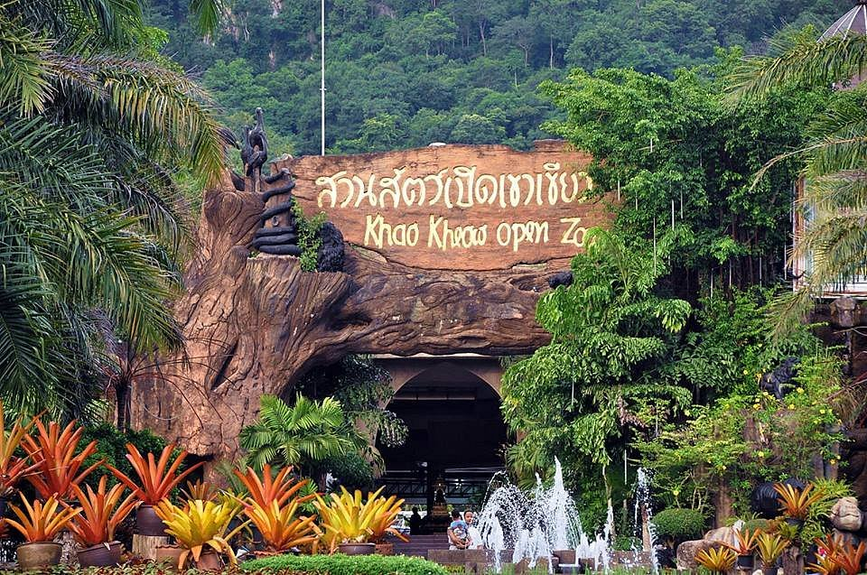
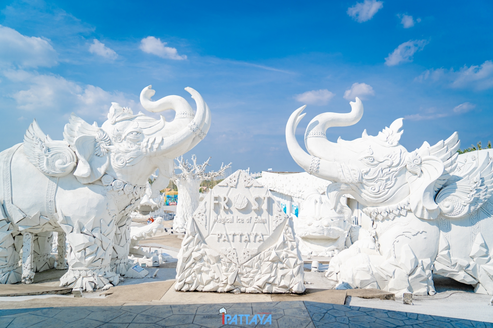
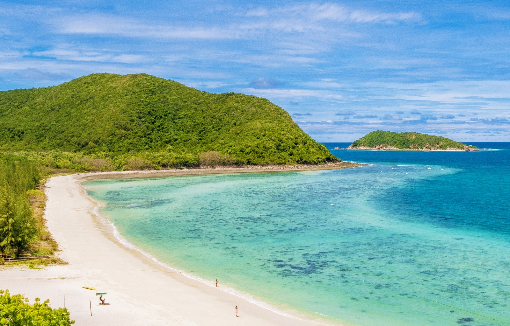

หาดบางแสน

“หาดบางแสน” ที่เป็นส่วนหนึ่งของชลบุรี และแม้จะอยู่ติดกับพัทยา แต่ทว่าถึงก่อน จึงนับว่าเป็นชายหาดที่ใกล้กรุงเทพฯ เป็นอย่างมาก อีกทั้งยังห่างจากตัวเมืองชลบุรีเพียงแค่ 10 กิโลเมตร ถ้าหากเที่ยวทะเลเสร็จแล้ว ก็สามารถขับรถไปเที่ยวในตัวเมืองชลบุรีได้อีก ภายในหาดบางแสนก็จะมีทั้งร้านอาหาร ที่นั่งริมทะเล และมีที่พักติดทะเลให้เลือกเพียบ จะเลือกไปเที่ยวบางแสนแค่วันเดียว หรือจะไปค้างคืนยังไงก็ฟิน
แกรนด์แคนยอน ชลบุรี

เห็นรูปแล้วอาจจะนึกว่าเป็นเมืองนอก แต่ที่นี่คือที่เที่ยวชลบุรีธรรมชาติในบ้านเรา ที่สวยงามแบบไม่ต้องแต่งฟิลเตอร์ สำหรับแกรนด์แคนยอน ชลบุรี ที่มีภูเขาสลับซับซ้อนและน้ำขังสีเขียวสวยงาม จนได้อีกชื่อหนึ่งว่าแกรนด์แคนยอนคีรี ที่มีมุมวิวให้ถ่ายรูปสวย ๆ เพียบ ทั้งรูปมุมสูงกับน้ำสีเขียวและภูเขาสีขาว ใครที่อยากมีรูปสวยก่อนใครก็รีบไปเที่ยวแกรนด์แคนยอน ชลบุรีด่วน ๆ เลย แต่ที่นี่มีแดดแรงและค่อนข้างร้อน อย่าลืมพกร่มหรือหมวกไปด้วย เพื่อให้สามารถท่องเที่ยวและถ่ายรูปกันได้อย่างคล่องตัวมากขึ้น
สวนสัตว์เปิดเขาเขียว

นับว่าเป็นสถานที่เที่ยวชลบุรีที่มีชื่อเสียงมากกับ “สวนสัตว์เปิดเขาเขียว” ซึ่งเป็นสวนสัตว์เปิดที่คุณจะได้พบกับสัตว์มากมายภายในนั้น โดยภายในสวนสัตว์เปิดเขาเขียวจะมีหลายโซนจัดแสดงที่น่าสนใจด้วยกัน อาทิ สวนละมั่ง แอฟริกัน ซาวันน่า ออสเตรเลียโซน และอื่น ๆ อีกมากมาย นอกจากนั้นยังมีโชว์ช้างว่ายน้ำ และกิจกรรมส่องสัตว์ตอนกลางคืนอีกด้วย
Frost Magical Ice of Siam ชลบุรี

ไม่ต้องทนร้อนอีกต่อไป เพราะที่ชลบุรีมีที่เที่ยวแห่งใหม่ที่เต็มไปด้วยความหนาวเย็น ด้วยการเนรมิตพื้นที่กว่า 30,000 ตร.กม. ให้กลายเป็นอาณาจักรเมืองหนาว ที่มีพื้นที่แบ่งเป็นสัดส่วนโดยที่ด้านนอกมีการตกแต่งที่สวยงามด้วยประติมากรรมทรายขาว และด้านในที่เต็มไปด้วยน้ำแข็งพร้อมมีประติมากรรมที่ถูกแกะสลักไว้อย่างสวยงามบนน้ำแข็งเช่นกัน ใครสนใจอยากลองไปเปลี่ยนบรรยากาศ ถ่ายรูปแบบอุณหภูมิติดลบ ต้องห้ามพลาด
เกาะแสมสาร

อีกหนึ่งเกาะในจังหวัดชลบุรี ที่ขึ้นชื่อเรื่องความสวยงาม และสามารถไปเที่ยวได้แบบเช้าไปเย็นกลับ ที่ “เกาะแสมสาร” ซึ่งบนเกาะจะมีหาดอยู่สองหาด ที่โดดเด่นด้วยน้ำทะเลใสสะอาด จนไม่อยากจะเชื่อว่านี่คือเกาะที่อยู่ใกล้กรุงเทพฯ ขนาดนี้ สำหรับใครที่ชอบดำน้ำ ขอบอกเลยว่าห้ามพลาด เพราะน้ำที่เกาะแสมสารใสมาก จนสามารถดำน้ำดูปะการังที่หน้าหาดได้เลย!